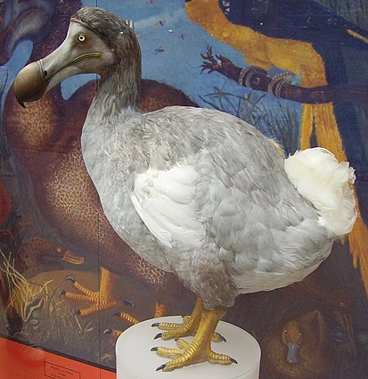
 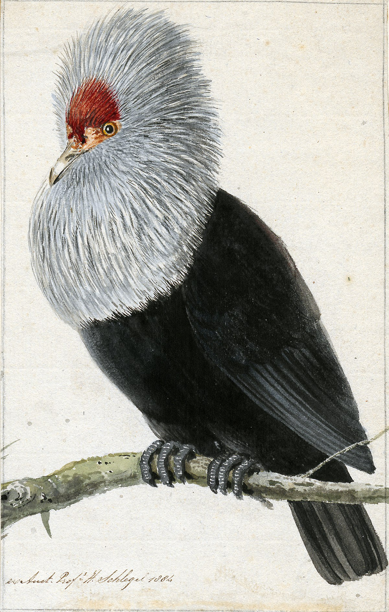
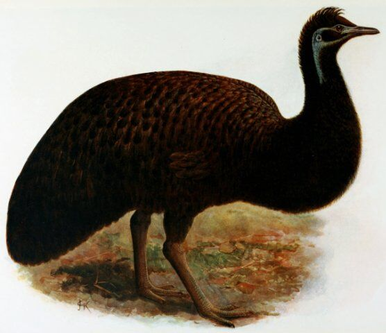
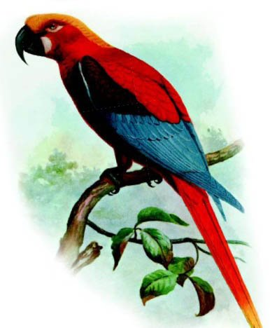
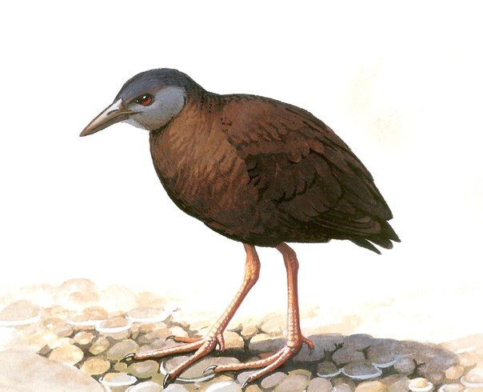
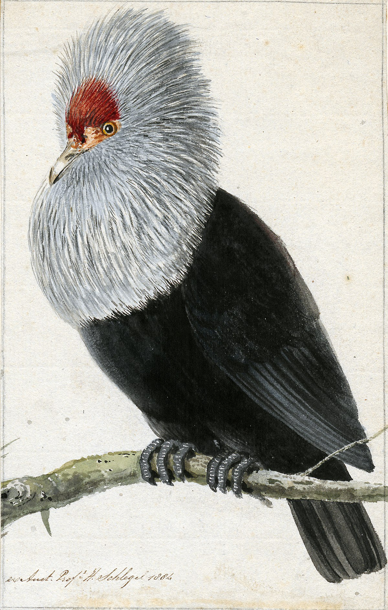
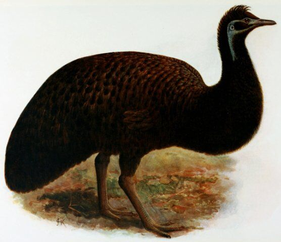
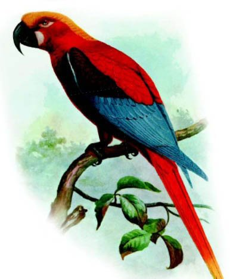
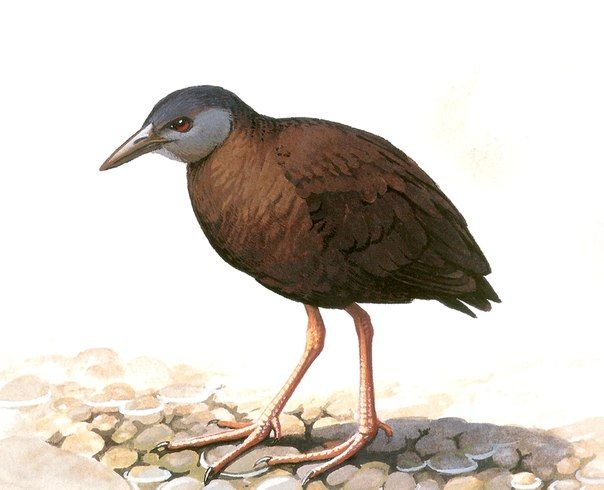
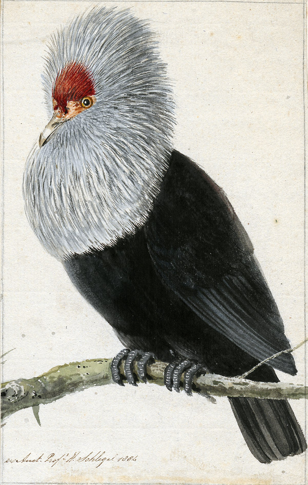
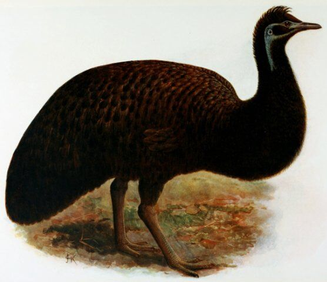
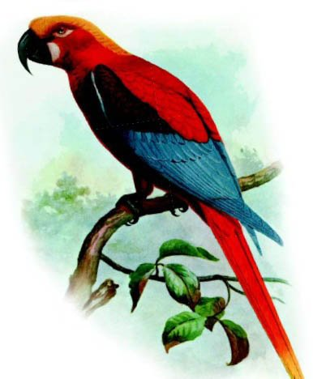
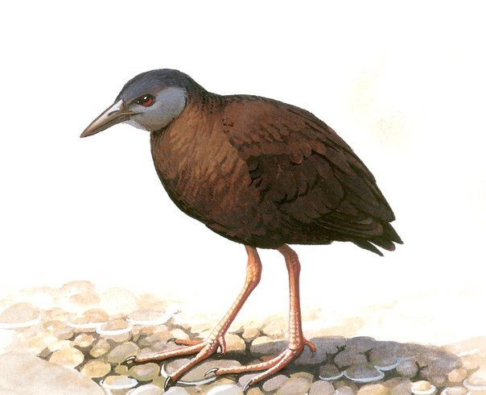
- Маврикийский чубатый попугай
- Рыжий маврикийский пастушок
- Маврикийский дронт
- Маврикийская утка
- Эпиорнисовые
- Пастушок Легата
- Родригесский дронт
- Гваделупский аратинга
- Мартиникский амазон
- Фиолетовый амазон
- Гваделупский ара
- Красный ямайский ара
- Реюньонский фоди
- Улиетанский какарики
- Буллеров скворец
- Родригесский дронт
- Жёлто-зеленый доминиканский ара
- Амстердамская утка
- Таитянская помарея
- Таитянский песочник
- Реюньонский кольчатый попугай
- Королевский гриф
- Новозеландский плодоядный голубь Норфолка
- Буроспинный дрозд
- Маврикийский синий голубь
- Вороний аплонис
- Бонинский земляной дрозд
- Эму острова Кенгуру
- Белая султанка
- Мохо-оаху
- Диффенбахов пастушок
- Маскаренский попугай
- Зелёно-жёлтый ямайский ара
- Бескрылая гагарка
- Киоеа
- Таитянский какарики
- Тасманийский эму
- Маскаренский хохлатый скворец
- Лесной малый моа
- Стеллеров баклан
- Кусаиенский погоныш
- Тонкоклювый нестор
- Белогорлый голубь Лорд-Хау
- Ямайский малый козодой
- Новокаледонский лори
- Кубинский ара
- Краснолобый прыгающий попугай
- Гималайская куропатка
- Самоанская камышница
- Серая утка
- Лабрадорская гага
- Новозеландский перепел
- Полосатый пастушок Маккуори
- Родригесский ожереловый попугай
- Ямайский одноцветный пастушок
- Сейшельский кольчатый попугай
- Гавайский погоныш
- Микронезийская альциона Рюкю
- Прыгающий попугай Маккуори
- Тристанская камышница
- Желтогорлая гавайская серпоклювка
- Большая комосская совка
- Желтоголовая вьюрковая цветочница
- Пальмовая гавайская цветочница
- Оранжевогрудая вьюрковая цветочница
- Желтогузая цветочница-мамо
- Пуэрто-риканский амазон